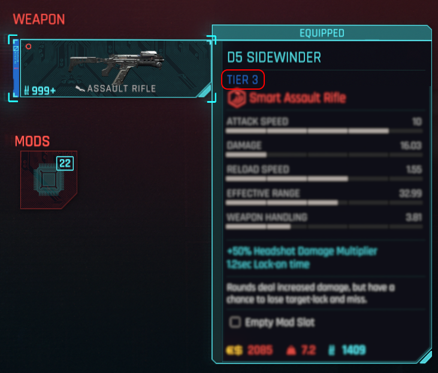
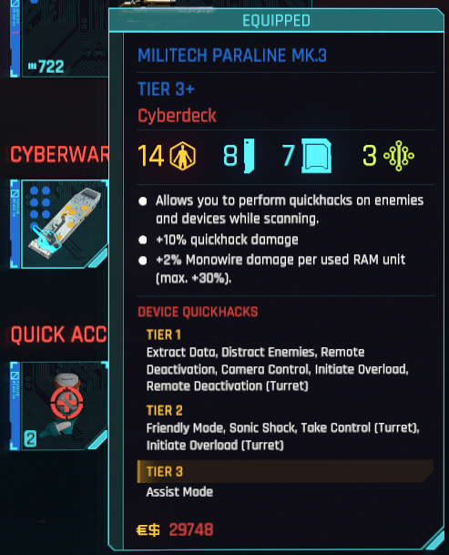
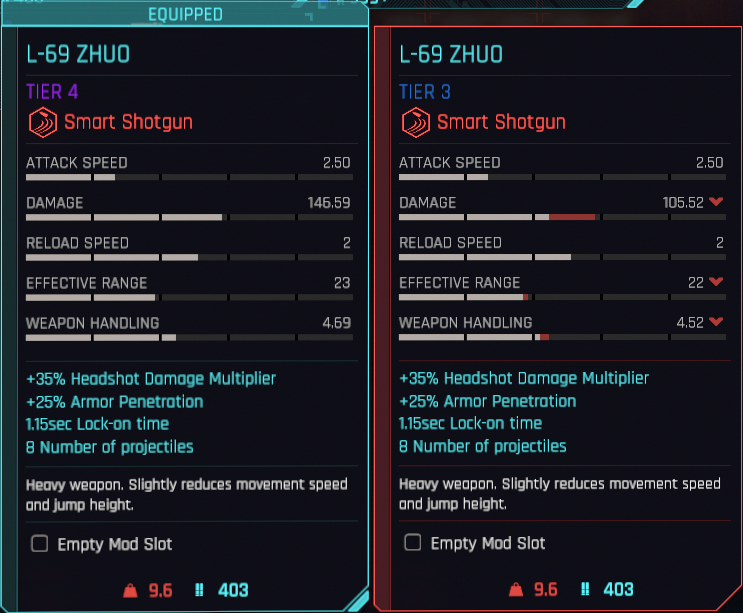

Item Tiers: An Overview
The first thing you might notice if you're returning to Cyberpunk 2077 from pre-2.0 is that the item card has been signifigantly changed. However even past that there is a pretty signifigant change to the way items are generated that the game never actually told you about. You see, in older Cyberpunk 2077 each weapon (and clothing) had a hidden level stat, which was use to determing the item's DPS (or armor) stat, and this information was never revealed the the player. However with 2.0, item level is completely removed and instead the focus is shifted more prominently towards the "rarity" of the item, or as it's called in Cyberpunk 2077, it's tier. There are 9(10?) tiers in cyberpunk, designated with 5 distinct colors and the presance of a + to distinguish tiers of the same color.
From lowest to highest the tiers are ordered
- White
- Green
- Blue
- Purple
- Orange
Example Tier 3 Weapon
Eample Tier 3+ Cyberdeck
The Differences of Weapons Between Tiers
So if tiers are the basis for item progression how do the actually affect the weapon? Well they primarly improve damage, healing amount, or atribtube magnitide. Depending if it's a weapon, consumable, or cyberware, respectively. However tier can also affect other things, such as effective range or handling for weapons, Cyberware may also have bonus attributes added, increased, or they can get additional armor, depending on the tier increase. Cyberdecks get new bonuses added per tier and get more quick hack slots and ram per tier+. Weapon mods lack + tiers and their positive effects scale with tier while their negitive effects usually stay static, but some weapon mods scale their negitive effects away with higher tiers.
